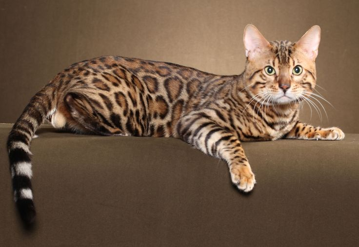
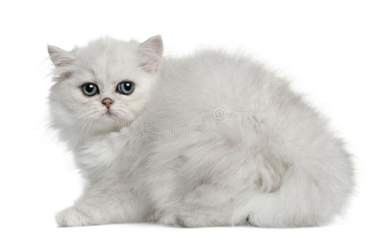

Maine Coon
"Grande, fuerte y muy cariñoso. Destaca por su pelaje abundante y su carácter amigable."

"Grande, fuerte y muy cariñoso. Destaca por su pelaje abundante y su carácter amigable."

Activo y juguetón. Su pelaje con manchas le da un aspecto salvaje

Calmado y elegante. Famoso por su cara achatada y su largo pelaje.

Elegante, activo y muy inteligente. Destaca por su pelaje largo y sedoso, además de su personalidad juguetona y cariñosa.

Grande, noble y muy protector. Destaca por su carácter tranquilo, lealtad y su apariencia imponente pero amigable.

Inteligente, leal y muy protector. Destaca por su facilidad de entrenamiento, valentía y fuerte vínculo con su dueño.
Bengalí
Persa